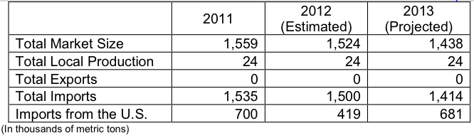

Wheat production is marginal in Colombia and is expected to average about 24 thousand metric tons annually. Colombia’s wheat is primarily of low quality and is not likely to expand. Under the FTA, the U.S. wheat enters Colombia with zero duty and no quota. Prior to FTA implementation, U.S. market share fell due to duty preferences for imports from the Southern Common Market (MERCOSUR) and Canada. FTA implementation created more favorable trade circumstances for U.S. wheat with greater opportunities for trade.